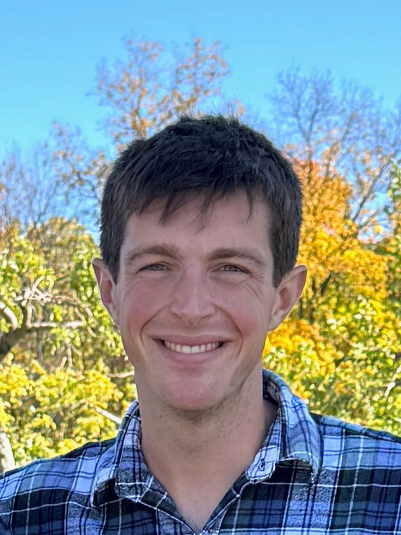

I am a postdoc in Professor Tamara Broderick's group at the MIT Laboratory for Information and Decision Systems. I'm originally from Vermont. I studied math as an undergraduate at Williams College in Western Massachusetts. I earned an MPhil and PhD in machine learning at the Department of Engineering at the University of Cambridge.
I develop methods for validation and uncertainty quantification in spatiotemporal data. I'm particularly interested in applications to air pollution. My work combines probabilistic machine learning, AI for science, and spatial statistics to address limitations in traditional validation approaches that assume independent, identically distributed data.
Download my CV here.